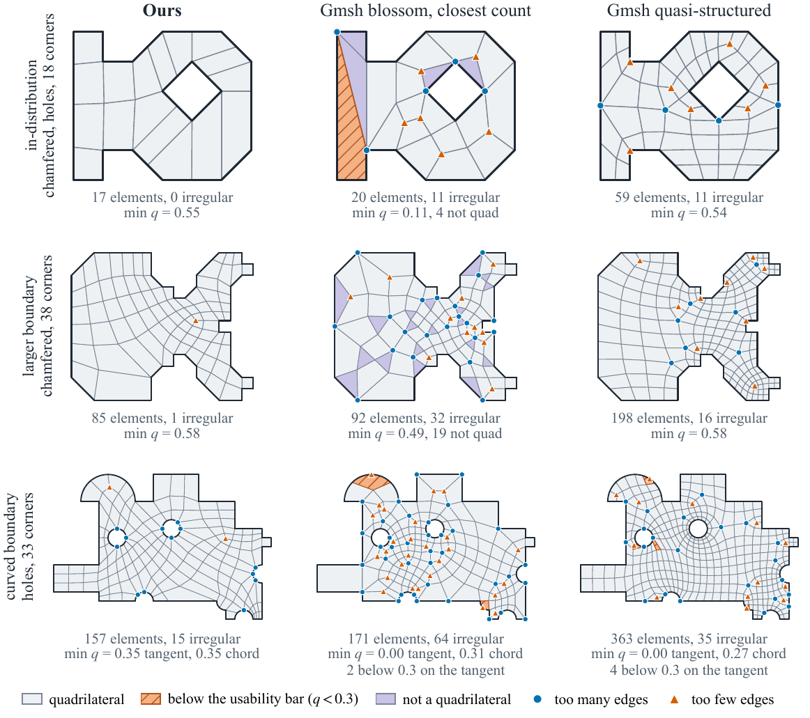
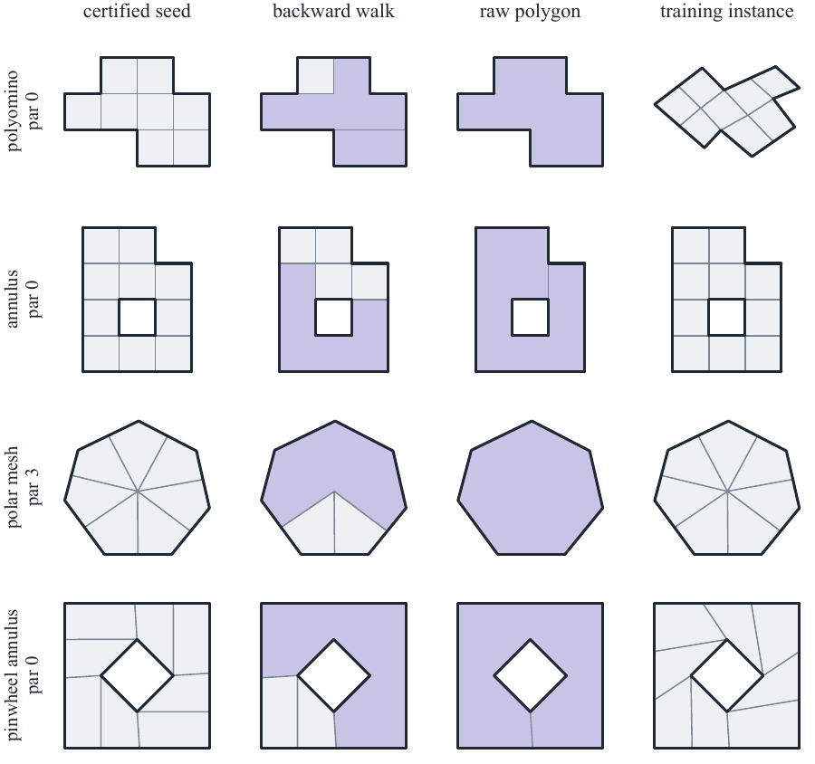
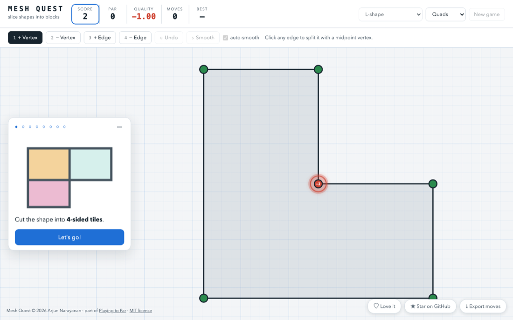

Reinforcement learning for provably optimal quadrilateral block decompositions
A block decomposition splits a domain into quadrilaterals, and it is judged largely by how many of its vertices are irregular. For every domain there is a floor on that number, fixed before any mesh exists. We train an agent to reach it.
The discrete Gauss–Bonnet identity fixes a lower bound on irregularity from the domain's corner angles and topology alone. A mesh that reaches it is provably optimal in its connectivity.
Starting from the bare boundary, the agent inserts chords and vertices on a doubly connected edge list. Its convolutions follow next, previous and twin, so it runs unchanged on domains larger than any seen in training.
Random play almost never reaches par. Optimal meshes that are trivial to construct, walked backward into demonstrations, get PPO started; PPO on generated domains takes it from there.
Shaded faces are not yet quadrilaterals. Dots mark the irregular vertices of the finished mesh; on the curved domain they are exactly the three its corners force.
Single greedy rollouts of the released agent. The tables below use the paper's full evaluation procedure.

On the same domains, Gmsh's meshers leave many irregular vertices (the dots) even when they are allowed several times the elements. The agent's meshes are at or near the bound.
Top: an in-distribution part with a hole, which the agent meshes optimally. Middle: a domain twice the training size. Bottom: a curved domain with holes, never seen in training.
Counts are domains. Excess is the median number of irregular vertices above par; at par counts domains meshed provably optimally.
| Method | all-quad | usable | excess | at par |
|---|---|---|---|---|
| Gmsh blossom | 51 | 38 | 9 | 0 |
| Gmsh frontal-quad | 43 | 29 | 8 | 1 |
| Gmsh quasi-structured | 96 | 96 | 7.5 | 2 |
| Gmsh blossom-full | 96 | 96 | 26 | 0 |
| Ours | 96.0 | 95.7 | 0 | 90.2 |
| Method | all-quad | usable | excess | at par |
|---|---|---|---|---|
| Gmsh blossom | 26 | 18 | 39 | 0 |
| Gmsh frontal-quad | 15 | 14 | 34 | 0 |
| Gmsh quasi-structured | 64 | 60 | 22 | 0 |
| Gmsh blossom-full | 64 | 64 | 156 | 0 |
| Ours | 64.0 | 62.0 | 0.75 | 31.0 |
Gmsh blossom and frontal-quad run at our element count; quasi-structured and blossom-full at their natural sizes, 3–15× ours. Ours: five attempts per domain at a doubled move budget with a split-and-continue repair, averaged over evaluation seeds. Curved-boundary results and full tables are in the paper.
Some optimal meshes are easy to build: polyominoes, annuli, meshes around a hub. Undoing one edge at a time turns each into a sequence of the agent's own moves that ends at par, so behaviour cloning has unlimited, certified demonstrations.
Each row shows a constructed optimal mesh, a point part-way along the backward walk, the single face it starts from, and the instance the agent trains on.

git clone https://github.com/ArjunNarayanan/par-quad.git
cd par-quad
python3.12 -m venv venv
venv/bin/pip install -r requirements.txtThe paper's domains come from geo2d, released soon. Until then export GEOGEN_PATH=tools/geo2d_lite runs everything on a stand-in generator whose domains differ from the paper's.
venv/bin/python utilities/animate_rollout.py \
-suite straight-holes -draw 10 -n 24 \
-out out -name demoWrites out/demo.mp4. The README covers the paper's evaluation, the Gmsh comparison, the curved repair search and training from scratch (about four hours on a laptop).
Play the agent's game in your browser: the same moves, the same bound. It solves every straight-sided level, but not every curved one.
Play now
@article{narayanan2026playing,
title = {Playing to Par: Reinforcement Learning for Provably Optimal
Quadrilateral Block Decompositions},
author = {Narayanan, Arjun and Persson, Per-Olof},
journal = {arXiv preprint arXiv:2609.32146},
year = {2026}
}